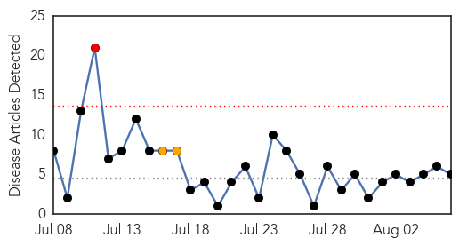
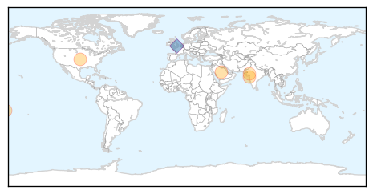
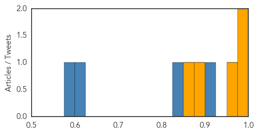
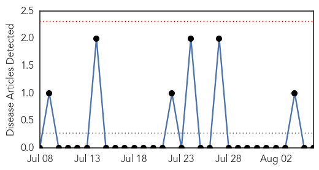

Dengue Fever
30-Day Web Trend
1 alerts, 2 warnings

30-Day Twitter Trend
7 alerts, 0 warnings
Article Locations
Article Confidences
Top Articles:
Top Tweets:
- 0.911
- pt has been tested initially for Dengue and Alkhumra and was Neg, samples sent to CDC and a lab in Ger for Ebola test!
- 0.832
- RT: La epidemia de censura es tanto o mas preocupante q la de dengue ,malaria y chikungunya
- 0.602
- RT: ¿Si ébola, malaria, dengue etc fueran enfermedades que se dieran en occidente las farmaceuticas habrían creado ya una …
- 0.582
- RT: @mirloto lo mismo con el SIDA, el dengue, la malaria, el paludismo... En esto no me tienes q convencer
- 0.556
- RT: Van 33 mil 497 casos de dengue y más de 46 mil de malaria (2210770) http://t.co/zrkiDw5yl3
- 0.556
- RT: Van 33 mil 497 casos de dengue y más de 46 mil de malaria (2210770) http://t.co/2gkP4adXuv
- 0.556
- RT: Van 33 mil 497 casos de dengue y más de 46 mil de malaria (2210770) http://t.co/cna57kpwKO
Mold/Fungal
30-Day Web Trend
0 alerts, 0 warnings

30-Day Twitter Trend
0 alerts, 0 warnings

Article Locations

Article Confidences

Top Articles:
-
No articles found for Aug 06, 2014
Top Tweets:
-
No tweets found for Aug 06, 2014